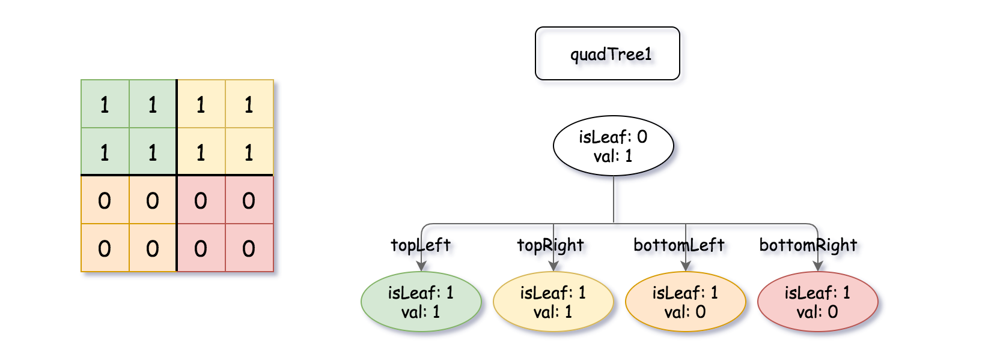

A Binary Matrix is a matrix in which all the elements are either 0 or 1.
Given quadTree1 and quadTree2. quadTree1 represents a n * n binary matrix and quadTree2 represents another n * n binary matrix.
Return a Quad-Tree representing the n * n binary matrix which is the result of logical bitwise OR of the two binary matrixes represented by quadTree1 and quadTree2.
Notice that you can assign the value of a node to True or False when isLeaf is False, and both are accepted in the answer.
A Quad-Tree is a tree data structure in which each internal node has exactly four children. Besides, each node has two attributes:
val: True if the node represents a grid of 1's or False if the node represents a grid of 0's.isLeaf: True if the node is leaf node on the tree or False if the node has the four children.
class Node {
public boolean val;
public boolean isLeaf;
public Node topLeft;
public Node topRight;
public Node bottomLeft;
public Node bottomRight;
}
We can construct a Quad-Tree from a two-dimensional area using the following steps:
- If the current grid has the same value (i.e all
1'sor all0's) setisLeafTrue and setvalto the value of the grid and set the four children to Null and stop. - If the current grid has different values, set
isLeafto False and setvalto any value and divide the current grid into four sub-grids as shown in the photo. - Recurse for each of the children with the proper sub-grid.

If you want to know more about the Quad-Tree, you can refer to the wiki.
Quad-Tree format:
The input/output represents the serialized format of a Quad-Tree using level order traversal, where null signifies a path terminator where no node exists below.
It is very similar to the serialization of the binary tree. The only difference is that the node is represented as a list [isLeaf, val].
If the value of isLeaf or val is True we represent it as 1 in the list [isLeaf, val] and if the value of isLeaf or val is False we represent it as 0.
Example 1:

Input: quadTree1 = [[0,1],[1,1],[1,1],[1,0],[1,0]] , quadTree2 = [[0,1],[1,1],[0,1],[1,1],[1,0],null,null,null,null,[1,0],[1,0],[1,1],[1,1]] Output: [[0,0],[1,1],[1,1],[1,1],[1,0]] Explanation: quadTree1 and quadTree2 are shown above. You can see the binary matrix which is represented by each Quad-Tree. If we apply logical bitwise OR on the two binary matrices we get the binary matrix below which is represented by the result Quad-Tree. Notice that the binary matrices shown are only for illustration, you don't have to construct the binary matrix to get the result tree.
Example 2:
Input: quadTree1 = [[1,0]] , quadTree2 = [[1,0]] Output: [[1,0]] Explanation: Each tree represents a binary matrix of size 1*1. Each matrix contains only zero. The resulting matrix is of size 1*1 with also zero.
Example 3:
Input: quadTree1 = [[0,0],[1,0],[1,0],[1,1],[1,1]] , quadTree2 = [[0,0],[1,1],[1,1],[1,0],[1,1]] Output: [[1,1]]
Example 4:
Input: quadTree1 = [[0,0],[1,1],[1,0],[1,1],[1,1]] , quadTree2 = [[0,0],[1,1],[0,1],[1,1],[1,1],null,null,null,null,[1,1],[1,0],[1,0],[1,1]] Output: [[0,0],[1,1],[0,1],[1,1],[1,1],null,null,null,null,[1,1],[1,0],[1,0],[1,1]]
Example 5:
Input: quadTree1 = [[0,1],[1,0],[0,1],[1,1],[1,0],null,null,null,null,[1,0],[1,0],[1,1],[1,1]] , quadTree2 = [[0,1],[0,1],[1,0],[1,1],[1,0],[1,0],[1,0],[1,1],[1,1]] Output: [[0,0],[0,1],[0,1],[1,1],[1,0],[1,0],[1,0],[1,1],[1,1],[1,0],[1,0],[1,1],[1,1]]
Constraints:
quadTree1andquadTree2are both valid Quad-Trees each representing an * ngrid.n == 2^xwhere0 <= x <= 9.